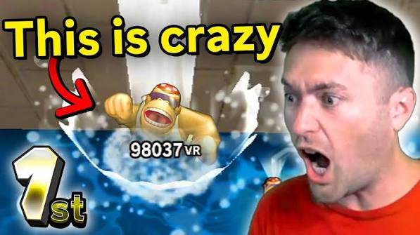

#1. Poofesure
Poofesure is arguably the modern king of Wii content on YouTube. Famous for his hilarious, high-energy rage videos while playing *Wii Sports*, *Wii Sports Resort*, and bowling against notorious CPU opponents like Matt, his channel turned classic Mii games into viral comedy gold.
#2. TWD98 (The Wii Dude)
TWD98 has dedicated a massive portion of his content career to Nintendo's motion-control classics. From deep dives into custom Wii hardware and nostalgic retrospectives to intense tournament challenges, he is a staple creator for fans of classic Nintendo party and sports games.

#3. RubaFive
RubaFive gained massive internet fame for pushing Wii Sports bowling and training minigames to absolute human perfection. His insane world records, high-score bowling strikes, and dedication to breaking limits in the Wii Sports universe made him a legend in the speedrunning and challenge community.